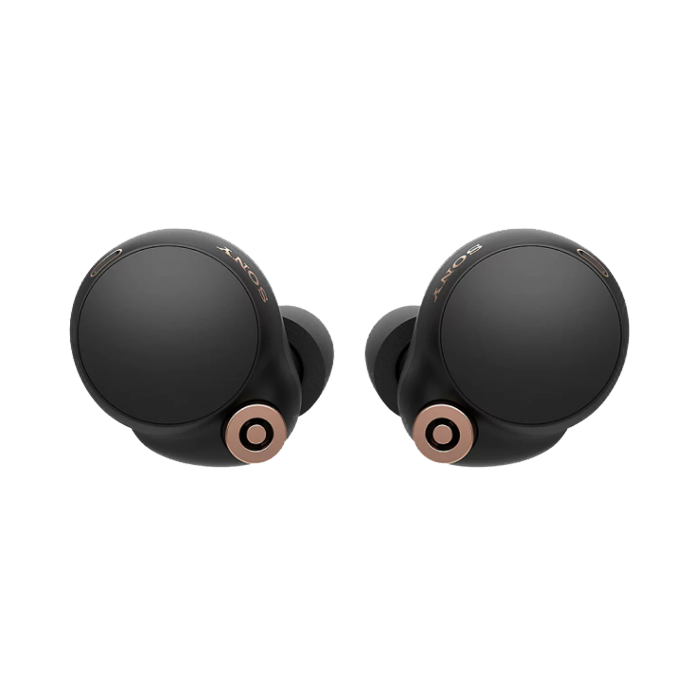
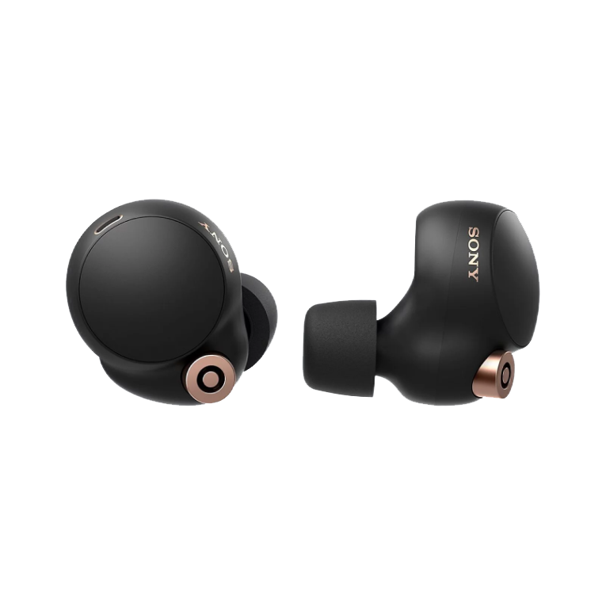
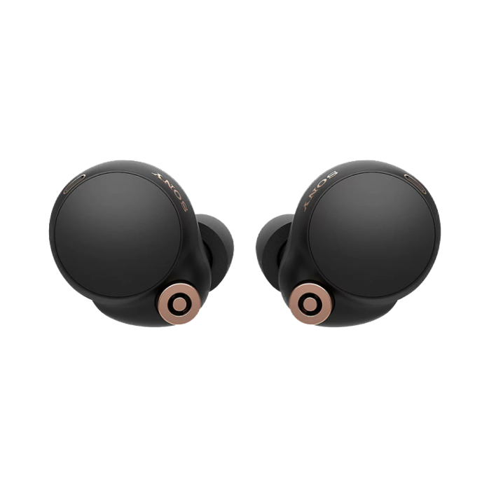
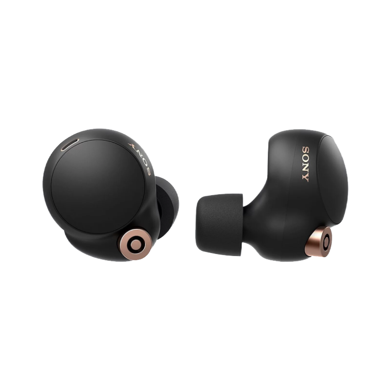
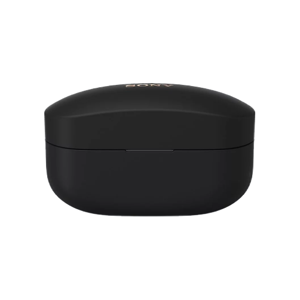
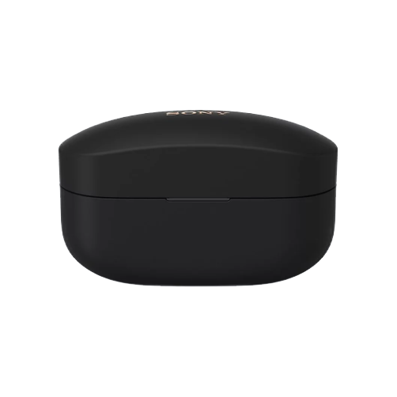
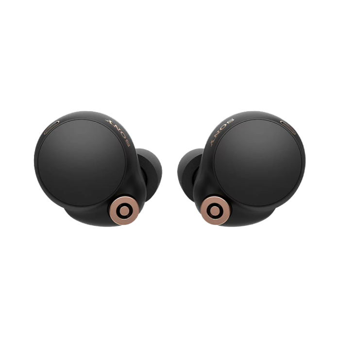
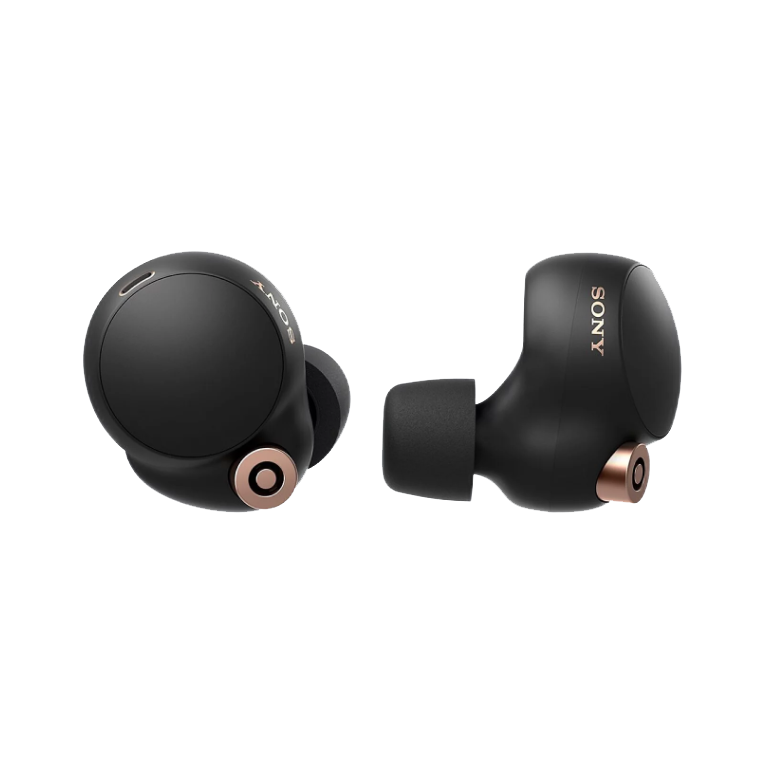
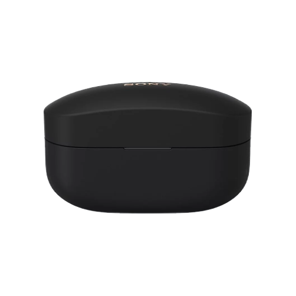

 

Sony WF-1000XM4
Sony
IDR 2.625.000 - IDR 2.900.000



IDR 2.625.000 - IDR 2.900.000
Dikembangkan secara khusus oleh Sony, Integrated Processor V1 baru kami menghadirkan performa noise cancelling dari chip QN1e kami yang sudah teruji menjadi jauh lebih baik lagi. Performa noise cancelling dan teknologi 'System on Chip' Bluetooth menghadirkan fitur noise cancelling yang canggih namun tetap hemat daya.
WF-1000XM4 kini mendukung High-Resolution Audio Wireless.1 Berkat driver 6mm yang didesain khusus, driver ini mereproduksi suara dinamis meskipun berukuran kecil, dan diafragma dengan kelenturan tinggi mereproduksi rentang bas yang kaya. Prosesor Terintegrasi V1 juga meningkatkan kualitas suara, mengurangi distorsi, dan memungkinkan pemrosesan kodek LDAC & DSEE Extreme.
Sejak memperkenalkan in-ear headphone pertama di dunia pada tahun 1982 (MDR-E252), kami telah menyurvei banyak sekali data terkait bentuk telinga dari seluruh dunia. Headphone WF-1000XM4 adalah produk dari penelitian itu, memadukan bentuk yang cocok dengan rongga telinga dengan desain permukaan ergonomis yang lebih pas dan stabil.
Tak perlu kabel, WF-1000XM4 dilengkapi teknologi Qi untuk pengisian daya nirkabel yang mudah. Bahkan smartphone berteknologi Qi, seperti Xperia terbaru dengan fungsi berbagi baterai, dapat digunakan untuk mengisi daya headphone & case pengisi daya.
Kami mendesain ulang tata letak internal untuk membuat WF-1000XM4 10% lebih kecil dari generasi sebelumnya, tanpa mengurangi kualitas suara atau masa pakai baterai. Berbobot hanya 7,3 g, mikrofon ini cukup ringan untuk dikenakan sepanjang hari. Case pengisi daya juga 40% lebih kecil, namun memberi Anda 16 jam pengisian di perjalanan.
Bought for me as a present by my wife. Amazing while they worked, but suddenly and inexplicably dropped from working for several hours a day to about 30mins at best. Unusable and out of warranty, and cost at least a tenner a month for their lifetime. Absolutely disgusted and horrified, and given up on the 'support' process. Never buying SONY again. Hilariously, my mobile keyboard suggests the word "don't" when trying to swipe the word "SONY"- very fitting.
I have never had such a great fit of any truly wireless earbuds. These are the first that I do not have to worry about loosing or constantly adjusting while wearing. The sound is also the best that I have had. The phone calls however, is a hit or miss. I'm not some callers complain of a muffled sound. Some don't.
Bought mine almost 2 years ago and started suffering the battery drain on one bud, the left battery would still be at 56% when the right one closed due to no power at all, I've just spent £13 on a new battery for the right earbud and longevity is back to what it was when it was new, I shouldn't need to do this but trying to get through to Sony Customer Service is nigh on impossible, I've been using Sony products since 1978 but these will be the last Sony product I'll buy. Sony really should have done a recall.
BLoved the headphones, until now... 2yrs after purchase I've been struck by the very widely known battery issue where my left ear bud dies within an hour after a full charge. Out of warranty so a repair will be more than a new pair, but ya know I don't think I'll bother. I'm going back to senheiser headphones.
Turned off as many features as possible - still drains in 45 minutes with left ear draining in 20 minutes. This is not a new problem as the earbuds have performed like this since day one. Complete waste of time and realise I need to give up and replace them but sorry it won't be Sony